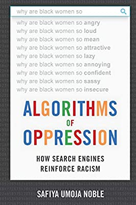

Data science ethics
Lecture 13
Warm-up
Announcements
Peer evaluation 1 due by 5:00 pm Friday (Oct 18) – look for an email from TEAMMATES
My office hours this week: 4:30 - 6:30 pm on Friday at Old Chem 213, back to normal next week
Lab on Monday: Work on project proposals!
Misrepresentation
Misrepresenting data science results
Some common ways people do this, either intentionally or unintentionally, include:
Claiming causality where it’s not in the scope of inference of the underlying study
Distorting axes and scales to make the data tell a different story
Visualizing spatial areas instead of human density for issues that depend on and affect humans
Omitting uncertainty in reporting
Causality - TIME coverage
How plausible is the statement in the title of this article?

Alice Park. Exercise Can Lower Risk of Some Cancers By 20%. Time Magazine. 16 May 2016.
Causality - LA Times coverage
What does “research shows” mean?
Melissa Healy. Exercising drives down risk for 13 cancers, research shows.
Los Angeles Times. 16 May 2016.
Causality - Original study
Moore, Steven C., et al. “Association of leisure-time physical activity with risk of 26 types of cancer in 1.44 million adults.” JAMA internal medicine 176.6 (2016): 816-825.
- Volunteers were asked about their physical activity level over the preceding year.
- Half exercised less than about 150 minutes per week, half exercised more.
- Compared to the bottom 10% of exercisers, the top 10% had lower rates of esophageal, liver, lung, endometrial, colon, and breast cancer.
- Researchers found no association between exercising and 13 other cancers (e.g. pancreatic, ovarian, and brain).
Carl Bergstrom and Jevin West. Calling Bullshit: The art of skepticism in a data-driven world.
Random House, 2020.
Sharon Begley. “Does exercise prevent cancer?”. StatNews. 16 May 2016.
Axes and scales - Tax cuts
What is the difference between these two pictures? Which presents a better way to represent these data?

Christopher Ingraham. “You’ve been reading charts wrong. Here’s how a pro does it.”. The Washington Post. 14 October 2019.
Axes and scales - Cost of gas
What is wrong with this picture? How would you correct it?

Axes and scales - Cost of gas
Axes and scales - COVID in GA
What is wrong with this picture? How would you correct it?

Georgia Department of Public Health. 11 May 2020.
Axes and scales - COVID in GA

Lucy D’Agostino McGowan. Graph detective. Live Free or Dichotomize. 17 May 2020.
Axes and scales - PP services
What is wrong with this picture? How would you correct it?
Timothy B. Lee. Whatever you think of Planned Parenthood, this is a terrible and dishonest chart. Vox. 29 September 2019.
Axes and scales - PP services
Maps and areas - Voting map
Do you recognize this map? What does it show?

Lazaro Gamio. “Election maps are telling you big lies about small things”. The Washington Post. 1 Nov 2016.
Maps and areas - Two alternate tales


Alberto Cairo. Visual Trumpery talk.
Maps and areas - Voting percentages

Alberto Cairo. Visual Trumpery talk.
Maps and areas - Voting percentages

Alberto Cairo. Visual Trumpery talk.
Uncertainty - Catalan independence
On December 19, 2014, the front page of Spanish national newspaper El País read “Catalan public opinion swings toward ‘no’ for independence, says survey”.

Alberto Cairo. The truthful art: Data, charts, and maps for communication. New Riders, 2016.
Uncertainty - Catalan independence

Alberto Cairo. “Uncertainty and Graphicacy: How Should Statisticians Journalists and Designers Reveal Uncertainty in Graphics for Public Consumption?”, Power from Statistics: Data Information and Knowledge, 2017.
Privacy
“Your” data
Every time we use apps, websites, and devices, our data is being collected and used or sold to others.
More importantly, decisions are made by law enforcement, financial institutions, and governments based on data that directly affect the lives of people.
Privacy of your data
What pieces of data have you left on the internet today? Think through everything you’ve logged into, clicked on, checked in, either actively or automatically, that might be tracking you. Do you know where that data is stored? Who it can be accessed by? Whether it’s shared with others?
What does Google think/know about you?
Have you ever thought about why you’re seeing an ad on Google? Google it! Try to figure out if you have ad personalization on and how your ads are personalized.
Your browsing history
Which of the following are you OK with your browsing history to be used towards?
- For serving you targeted ads
- To score you as a candidate for a job
- To predict your race/ethnicity for voting purposes
Who else gets to use your data?
Suppose you create a profile on a social media site and share your personal information on your profile. Who else gets to use that data?
- Companies the social media company has a connection to?
- Companies the social media company sells your data to?
- Researchers?
AOL search data leak
Michael Barbaro and Tom Zeller Jr. A Face Is Exposed for AOL Searcher No. 4417749.
New York Times. 9 August 2006.
OK Cupid data breach
In 2016, researchers published data of 70,000 OkCupid users—including usernames, political leanings, drug usage, and intimate sexual details
Researchers didn’t release the real names and pictures of OKCupid users, but their identities could easily be uncovered from the details provided, e.g. usernames
OK Cupid data breach

OK Cupid data breach
Some may object to the ethics of gathering and releasing this data. However, all the data found in the dataset are or were already publicly available, so releasing this dataset merely presents it in a more useful form.
Researchers Emil Kirkegaard and Julius Daugbjerg Bjerrekær
Data privacy
In analysis of data that individuals willingly shared publicly on a given platform (e.g. social media), how do you make sure you don’t violate reasonable expectations of privacy?
Algorithmic bias
Garbage in, garbage out
In statistical modeling and inference we talk about “garbage in, garbage out” – if you don’t have good (random, representative) data, results of your analysis will not be reliable or generalizable.
Corollary: Bias in, bias out.
Google Translate
What might be the reason for Google’s gendered translation? How do ethics play into this situation?

Machine Bias
2016 ProPublica article on algorithm used for rating a defendant’s risk of future crime:
In forecasting who would re-offend, the algorithm made mistakes with black and white defendants at roughly the same rate but in very different ways.
The formula was particularly likely to falsely flag black defendants as future criminals, wrongly labeling them this way at almost twice the rate as white defendants.
White defendants were mislabeled as low risk more often than black defendants.

Source: ProPublica
Risk score errors
What is common among the defendants who were assigned a high/low risk score for reoffending?


Risk scores
How can an algorithm that doesn’t use race as input data be racist?

Predicting ethnicity
Improving Ecological Inference by Predicting Individual Ethnicity from Voter Registration Record (Imran and Khan, 2016)
In both political behavior research and voting rights litigation, turnout and vote choice for different racial groups are often inferred using aggregate election results and racial composition. Over the past several decades, many statistical methods have been proposed to address this ecological inference problem. We propose an alternative method to reduce aggregation bias by predicting individual-level ethnicity from voter registration records. Building on the existing methodological literature, we use Bayes’s rule to combine the Census Bureau’s Surname List with various information from geocoded voter registration records. We evaluate the performance of the proposed methodology using approximately nine million voter registration records from Florida, where self-reported ethnicity is available. We find that it is possible to reduce the false positive rate among Black and Latino voters to 6% and 3%, respectively, while maintaining the true positive rate above 80%. Moreover, we use our predictions to estimate turnout by race and find that our estimates yields substantially less amounts of bias and root mean squared error than standard ecological inference estimates. We provide open-source software to implement the proposed methodology. The open-source software is available for implementing the proposed methodology.
wru package
The said “source software” is the wru package: https://github.com/kosukeimai/wru.
Do you have any ethical concerns about installing this package?
wru package
Was the publication of this model ethical? Does the open-source nature of the code affect your answer? Is it ethical to use this software? Does your answer change depending on the intended use?
library(wru)
predict_race(voter.file = voters, surname.only = TRUE) |>
select(surname, contains("pred")) surname pred.whi pred.bla pred.his pred.asi
1 Khanna 0.045110474 0.003067623 0.0068522723 0.860411906
2 Imai 0.052645440 0.001334812 0.0558160072 0.719376581
3 Rivera 0.043285692 0.008204605 0.9136195794 0.024316883
4 Fifield 0.895405704 0.001911388 0.0337464844 0.011079323
5 Zhou 0.006572555 0.001298962 0.0005388581 0.982365594
6 Ratkovic 0.861236727 0.008212824 0.0095395642 0.011334635
7 Johnson 0.543815322 0.344128607 0.0272403940 0.007405765
8 Lopez 0.038939877 0.004920643 0.9318797791 0.012154125
10 Wantchekon 0.330697188 0.194700665 0.4042849478 0.021379541
9 Morse 0.866360147 0.044429853 0.0246568086 0.010219712
pred.oth
1 0.084557725
2 0.170827160
3 0.010573240
4 0.057857101
5 0.009224032
6 0.109676251
7 0.077409913
8 0.012105576
10 0.048937658
9 0.054333479wru package
me <- tibble(surname = "Çetinkaya-Rundel")
predict_race(voter.file = me, surname.only = TRUE) surname pred.whi pred.bla pred.his pred.asi pred.oth
1 Çetinkaya-Rundel 0.9177967 0 0 0 0.08220329Further reading
How Charts Lie

Calling Bullshit

Calling Bullshit
The Art of Skepticism in a
Data-Driven World
by Carl Bergstrom and Jevin West
Machine Bias

by Julia Angwin, Jeff Larson, Surya Mattu, and Lauren Kirchner
Ethics and Data Science

by Mike Loukides, Hilary Mason, DJ Patil
(Free Kindle download)
Weapons of Math Destruction

Weapons of Math Destruction
How Big Data Increases Inequality and Threatens Democracy
by Cathy O’Neil
Algorithms of Oppression

Algorithms of Oppression
How Search Engines Reinforce Racism
by Safiya Umoja Noble
And more recently…
How AI discriminates and what that means for your Google habit
A conversation with UCLA internet studies scholar Safiya Noble
by Julia Busiek
Parting thoughts
At some point during your data science learning journey you will learn tools that can be used unethically
You might also be tempted to use your knowledge in a way that is ethically questionable either because of business goals or for the pursuit of further knowledge (or because your boss told you to do so)
How do you train yourself to make the right decisions (or reduce the likelihood of accidentally making the wrong decisions) at those points?